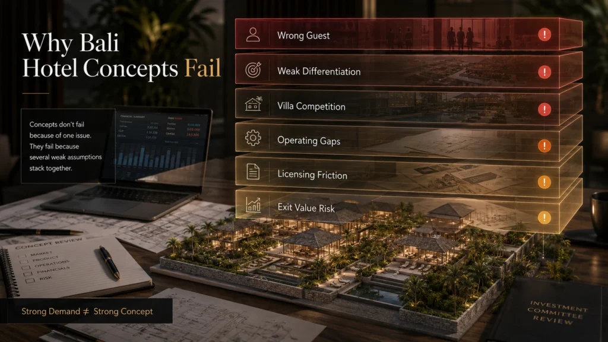
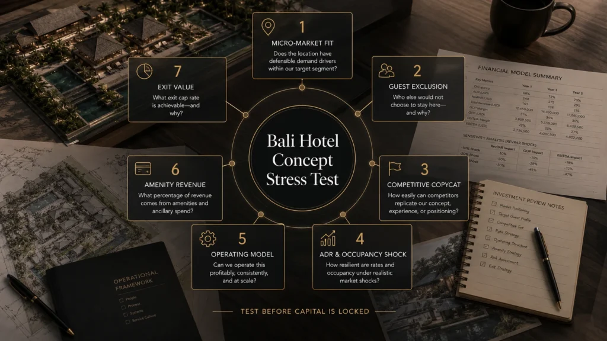
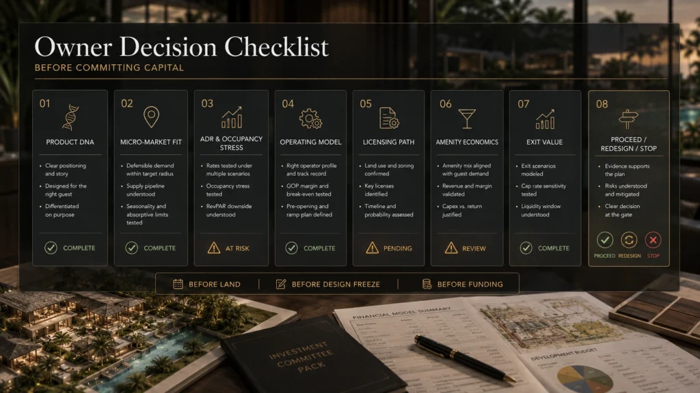

Many Bali hotel concepts do not fail because Bali lacks demand. They fail because the Bali hotel concept stress test was never done before the project moved into design, funding, branding, or sales.
A project can look strong in a pitch deck, survive a basic feasibility study, attract early investor interest, and still become commercially fragile by year two. The usual reason is not one fatal mistake. It is a stack of untested assumptions: the wrong guest, the wrong micro-market, weak rate logic, overestimated amenity demand, underestimated villa competition, unclear operating model, and no downside exit test.
For owners, developers, asset managers, and family offices, the lesson is simple: before you build, fund, brand, or sell a hotel project in Bali, you need a **Bali hotel concept stress test** - not just a beautiful design narrative.
Key Takeaways
- Bali demand is strong, but that does not mean every hotel concept is commercially defensible.
- Many weak concepts fail because they are validated by optimistic stakeholders before being challenged by neutral owner-side analysis.
- A Bali hotel concept stress test should challenge ADR, occupancy, supply growth, villa competition, licensing friction, operating cost, amenity economics, and exit value.
- Architecture, branding, wellness facilities, or branded residences cannot rescue a hotel if the core product logic is weak.
- The strongest projects define Product DNA, target guest, spatial logic, operating model, revenue architecture, and owner-side return logic before design freeze.
Evidence Note
External market data in this article is cited from official statistics, industry reports, and reputable hospitality publications. Zenith interpretation is clearly framed as operator-first opinion. Stress-test ranges are illustrative and must be replaced by project-specific modelling before investment decisions.
Why This Topic Matters Now
Bali is not a weak hotel market. That is exactly why concept risk is often underestimated.
The Bali Hotel & Branded Residences 2026 report by Horwath HTL and C9 Hotelworks reported that Bali international arrivals reached 6,948,754 in 2025, up around 10% from 2024. The same report noted that average hotel occupancy softened to 74%, while ADR in IDR terms increased to IDR 2.35 million.
That tells owners something important: demand can grow while competitive pressure still increases.
Current official data also shows that monthly trading conditions can move materially. BPS Bali reported that March 2026 direct foreign tourist arrivals to Bali were 472,070, down 4.11% from February 2026. Star-rated hotel occupancy in March 2026 was 52.54%, higher than March 2025 but lower than February 2026.
The supply side matters just as much. Horwath HTL and C9 reported an active Bali hotel pipeline of 45 hotels and 5,641 rooms, with Canggu, Jimbaran / Uluwatu, and Ubud accounting for the majority of new development. The report also notes that premium categories represent a major share of pipeline rooms.
For owners and investors, this means the next cycle is not only about entering Bali. It is about entering Bali with a concept that can defend rate, occupancy, margin, and exit value.
The Core Problem: Demand Is Not the Same as Defensibility
A destination can have strong arrivals and still punish weak projects.
A hotel owner does not capture “Bali demand” in general. The asset captures a narrow portion of demand that matches its exact micro-location, price point, guest promise, service model, room mix, amenity stack, distribution strength, and operating consistency.
That is where many projects break.
The concept is often approved because each stakeholder validates the part that benefits them:
| Stakeholder | What They Often Validate | What May Remain Untested |
|---|---|---|
| Architect | Design potential, aesthetics, spatial narrative | Guest segmentation, operating flow, payroll logic |
| Sales agent | Marketability and investor appeal | Long-term trading performance |
| Lender | Collateral and base-case feasibility | Year-three downside performance |
| Brand / operator | Brand fit or fee potential | Owner return resilience |
| Developer | Land value and build ambition | Micro-market demand depth |
| Consultant | Scope-specific deliverable | Integrated product-operating-commercial logic |
The missing role is the adversarial owner-side reviewer: someone who tries to break the concept before the market does.
This is where a hotel feasibility study in Bali must go beyond spreadsheet optimism and test whether the product, market, operating model, and investment logic actually work together.

Why Do Many Bali Hotel Concepts Fail?
Many Bali hotel concepts fail because the product logic is defined too late. Owners often start with land, architecture, renders, and sales positioning before defining the target guest, rate logic, operating model, staffing reality, licensing path, and owner-side return thresholds. The result can be a visually attractive property with weak commercial defensibility.
The most common failure pattern is not bad design. It is design before Product DNA.
A strong hotel concept must answer:
- Who is the guest?
- Why will this guest choose this property over hotels, villas, residences, and retreats nearby?
- What ADR is defensible in low season, not only in peak season?
- Which revenue streams are real, and which are brochure assumptions?
- What operating model is required to deliver the promise?
- What happens if one major demand segment does not arrive?
- What happens if a similar project opens within 18 - 24 months?
- What happens to exit value if ADR drops 15 - 20%?
If these questions are not answered before design freeze, the project may be beautiful but commercially fragile.
That is why a Bali hotel concept stress test should happen before the project becomes expensive to correct.
What Most Owners and Investors Get Wrong
1. They Treat Bali as One Market
Bali is not one hospitality market.
Ubud, Canggu, Berawa, Pererenan, Seminyak, Sanur, Nusa Dua, Uluwatu, Jimbaran, Seseh, and Tabanan are not interchangeable. Each submarket has different access logic, guest behaviour, competitive pressure, rate ceilings, villa substitution risk, and operating requirements.
A concept that works in Ubud may fail in Canggu. A product that works in Nusa Dua may feel irrelevant in Pererenan. A remote wellness retreat may command premium intent from a narrow audience but fail if the stay logic, programming, access, and retreat cadence are underbuilt.
This is why serious Bali hotel investment risk review must be micro-market specific. “Bali is growing” is not an investment thesis.
2. They Confuse Differentiation With Decoration
A different design is not the same as a differentiated hotel.
Bali has no shortage of attractive villas, bamboo structures, tropical minimalism, pool villas, jungle retreats, cliff clubs, wellness language, and lifestyle cafés. A concept is not differentiated because the render looks premium. It is differentiated when a specific guest chooses it for a specific reason at a specific price point, repeatedly.
True differentiation sits in the operating promise.
| Surface Differentiation | Defensible Differentiation |
|---|---|
| “Luxury tropical design” | Clear guest segment and rate logic |
| “Wellness retreat” | Program architecture, practitioner credibility, schedule, recovery journey |
| “Lifestyle hotel” | Community, F&B energy, events, direct booking engine |
| “Boutique resort” | Service rhythm, design intimacy, room product, experience curation |
| “Branded residence” | Governance, service charge logic, operator durability, hotel viability |
Hospitality Investor has also reported industry concern that branded residences must be executed with discipline and long-term durability. The owner-side lesson is clear: branded residences may support a project, but they should not be used to hide a weak hotel concept.
3. They Underestimate Villa and STR Competition
Many hotel owners benchmark only against hotels. That is incomplete in Bali.
A guest choosing a stay in Canggu, Uluwatu, Pererenan, Seseh, or Ubud may compare the hotel against private villas, serviced residences, managed apartments, retreat houses, and Airbnb-style inventory. In several micro-markets, the guest’s comparison set is not the hotel comp set prepared in the feasibility deck.
Villa Finder’s Bali villa oversupply analysis reported that short-term rental supply has expanded sharply in some Bali markets. It also cited Canggu as an example where year-on-year listing growth exceeded 40% while occupancy declined, even though demand remained strong.
For a hotel investor, this creates a direct strategic question:
Why would the guest pay hotel ADR instead of renting a villa?
Possible answers include:
- stronger service reliability;
- better design-to-service integration;
- superior F&B;
- credible wellness or recovery programming;
- safety and security;
- brand trust;
- professional revenue management;
- community and events;
- integrated guest journey;
- operational consistency.
Without that answer, the hotel is not only competing with hotels. It is competing with every good-looking villa on an OTA.
4. They Accept Base-Case Feasibility Too Easily
A base-case feasibility model is not a stress-test.
A feasibility model may show acceptable returns if occupancy, ADR, opening date, CAPEX, payroll, F&B capture, spa capture, and exit yield all behave reasonably. But Bali projects rarely fail under the base case. They fail when several variables move against the owner at once.
The relevant question is not:
“Does the project work if our assumptions are correct?”
The relevant question is:
“Does the project still protect capital if our assumptions are wrong?”
This is also why weak projects often become future distressed opportunities. A failed hotel turnaround in Bali usually reveals problems that existed long before opening: unclear guest logic, poor operating structure, wrong positioning, weak commercial controls, or overbuilt facilities with no real demand base.
5. They Treat Licensing and Infrastructure as Back-Office Details
Licensing, permits, infrastructure, water, access, traffic, power, wastewater, parking, and compliance are not administrative afterthoughts. They shape what can be built, opened, operated, marketed, and financed.
Bali’s spatial planning debate has also become more sensitive. The Bali Province spatial planning portal has discussed moratorium policy in the context of development saturation, environmental pressure, overtourism, land conversion, water stress, and accommodation oversupply. The Bali TARU portal frames moratorium discussion as part of broader spatial and sustainability governance.
The operator-first lesson: if licensing and infrastructure are not stress-tested early, the owner may discover too late that the concept cannot operate as imagined.
What Is a Bali Hotel Concept Stress Test?
A Bali hotel concept stress test is an owner-side review that checks whether a hotel idea can survive real market, operating, regulatory, and financial pressure before capital is locked.
The purpose is not to make the concept look attractive. The purpose is to find the weak points early, while the owner can still change the product, design, operating model, or investment plan.
Unlike a branding exercise, design review, or generic feasibility summary, a stress-test asks what happens if the project faces pressure after opening.
It tests whether the concept still makes sense if:
– ADR is lower than planned;
– occupancy stabilizes below target;
– villa competition increases;
– a stronger competitor opens nearby;
– construction costs rise;
– opening is delayed;
– amenities underperform;
– staffing costs are higher than expected;
– licensing or infrastructure becomes more complex;
– exit value is weaker than the development model assumes.
A proper stress-test does not protect the idea. It challenges the idea. If the concept breaks under realistic downside conditions, the owner should redesign it before the market does.
The Zenith View: Stress-Test the Concept Before You Build It
Zenith’s operator-first view is direct: a Bali hotel concept should be treated as unproven until it survives adversarial review.
That review should not only ask whether the site is beautiful or whether the market is growing. It should test whether the concept can defend its commercial thesis under pressure.
What Zenith Would Check First
| Stress-Test Area | Owner-Side Question | Why It Matters |
|---|---|---|
| Guest definition | Who exactly books this, and who does not? | Prevents vague “luxury guest” assumptions |
| Micro-market fit | Does this concept belong in this location? | Avoids wrong product in the wrong demand node |
| ADR defensibility | What makes the rate believable in low season? | Protects RevPAR and valuation |
| Competitive substitution | What happens when guests compare villas, hotels, and retreats? | Captures real booking behaviour |
| Operating model | Can the team deliver the promise profitably? | Connects concept to staffing and SOPs |
| Amenity economics | Which facilities generate revenue, and which are brand theatre? | Avoids CAPEX-heavy underperforming spaces |
| Licensing path | Can the concept legally operate as designed? | Prevents delayed openings and restricted use |
| Exit value | What is the asset worth if ADR falls? | Protects investor downside |
This is not pessimism. It is capital discipline.
A serious hotel owner’s representative in Bali should challenge the project before architects, contractors, brands, brokers, or sales teams push the concept beyond the point of easy correction.
The Bali Hotel Concept Stress-Test Framework
A proper Bali hotel concept stress test should be completed before land acquisition, design freeze, operator appointment, branded residence structuring, or investor sales.
At minimum, it should include seven tests.
1. The Micro-Market Fit Test
The concept must be matched to the exact demand node.
A surf-lifestyle product, longevity retreat, luxury cliff resort, family destination, branded residence, villa resort, social club, or urban wellness hotel each requires a different location logic.
The test should ask:
- Does the micro-market already support this guest?
- Is the location a destination, pass-through, or add-on stay?
- Is the area strengthening or becoming saturated?
- Does access support the rate positioning?
- Are nearby competitors complementary or directly substitutive?

2. The Guest Exclusion Test
Every concept excludes someone. Owners must know who.
A remote retreat may exclude short-stay guests. A premium wellness resort may exclude families. A social lifestyle hotel may exclude privacy-driven luxury guests. A high-density villa project may exclude guests seeking service depth.
The stress-test should quantify:
- primary guest segments;
- secondary segments;
- segments deliberately excluded;
- expected segment mix by season;
- what happens if the primary segment underperforms.
3. The Competitive Copycat Test
If the concept is successful, it will be copied.
The question is not whether the first year is defensible. The question is whether year three remains defensible after competitors respond.
Test scenarios should include:
- one major new hotel opening nearby;
- a villa cluster copying the design language;
- a stronger operator entering the same segment;
- OTA discount pressure;
- a new beach club, wellness club, or branded residence changing demand flows.
4. The ADR and Occupancy Shock Test
The base case should not be the decision case.
For early concept review, Zenith would typically test several downside scenarios. These are illustrative ranges, not a forecast.
| Scenario | ADR Movement | Occupancy Movement | Purpose |
|---|---|---|---|
| Base Case | As underwritten | As underwritten | Developer / investor plan |
| Soft Case | -10% | -5 points | Normal market friction |
| Bear Case | -15% to -20% | -5 to -10 points | Competitive and rate pressure |
| Severe Case | -20%+ | -10 points+ | Redesign / stop-go test |
The question is not only whether EBITDA drops. The question is whether NOI, debt service, investor distributions, payback period, and exit value remain acceptable.
5. The Operating Model Test
A concept is only real if it can be operated.
This test asks:
- How many staff are required by department?
- What service standards are promised?
- What SOPs are required?
- What pre-opening training period is needed?
- Which spaces create operational bottlenecks?
- Which amenities require specialists?
- What happens if the GM, chef, spa lead, revenue manager, or wellness lead is weak?
Many projects look profitable because the payroll model is underbuilt. Then the hotel opens, the owner discovers the real service cost, and margins compress.
This is why concept development and hotel pre-opening strategy should not be separated. The operating model must be designed before the asset is built.
6. The Amenity Revenue Test
Amenities should not be accepted as “value-add” by default.
A spa, gym, wellness room, restaurant, beach club, kids club, co-working lounge, or recovery suite can strengthen a project. It can also become an expensive underperforming area if demand, pricing, staffing, licensing, and programming are not properly designed.
For each amenity, test:
| Amenity Question | Required Answer |
|---|---|
| Who uses it? | In-house guests, members, locals, external visitors, groups |
| Why do they pay? | Clear demand trigger |
| What is the price logic? | Menu, package, membership, inclusion, add-on |
| What is the staffing model? | Fixed and variable labour |
| What is the utilization target? | Daily / weekly usage assumptions |
| What if it underperforms? | Cost reduction, repositioning, alternate use |
7. The Exit Value Test
A concept can appear viable during development and still destroy value at exit.
If the asset misses ADR, occupancy, or NOI targets, the valuation impact can be severe. This is especially important for developers, family offices, and investors planning refinance, sale, branded residence sell-down, or portfolio expansion.
The exit test should ask:
- What is the value under base-case NOI?
- What is the value if ADR drops 15 - 20%?
- What is the value if occupancy stabilizes below plan?
- What happens if the asset requires additional CAPEX after opening?
- Would a buyer see a defensible hotel or a generic asset with weak trading?
If the answer is weak, the concept needs redesign before capital is locked.
Operational Implications
A Bali hotel concept stress test should change the project before construction, not after opening.
The practical operational implications include:
- room mix may need adjustment;
- some amenities may need to shrink, expand, move, or disappear;
- back-of-house may require more serious planning;
- F&B may need a sharper capture strategy;
- spa / wellness may need credible programming instead of generic treatment rooms;
- staffing assumptions may need recalibration;
- pre-opening timeline may need stronger governance;
- operator search may need to happen earlier;
- technology, revenue management, and direct booking logic may need to be designed into the operating model.
The worst outcome is discovering operational truth after the asset has already been built.
Commercial Implications
Concept weakness becomes financial weakness through four channels: rate pressure, occupancy instability, margin compression, and weaker exit value.
| Weakness | Commercial Impact |
|---|---|
| Poor differentiation | Discounting, weak ADR, OTA dependency |
| Wrong guest segment | Lower occupancy, unstable seasonality |
| Overbuilt amenities | Higher payroll, utilities, maintenance, low ROI |
| Weak operating model | Poor reviews, lower repeat demand, higher owner intervention |
| Licensing or infrastructure friction | Delayed opening, restricted operations, additional CAPEX |
| Weak exit story | Lower valuation, lower buyer confidence, difficult refinancing |
The most dangerous hotel concept is not the obviously bad one. It is the concept that looks investable only because the downside case was never modelled.
What To Do Before Committing Capital
Before committing serious capital to a Bali hotel concept, owners and investors should complete the following work.
| Step | Action | Output |
|---|---|---|
| 1 | Define Product DNA | Guest, promise, positioning, experience logic |
| 2 | Validate micro-market fit | Demand node, comp set, STR substitution, location logic |
| 3 | Stress-test ADR and occupancy | Base, soft, bear, severe cases |
| 4 | Review operating model | Staffing, SOPs, service flow, pre-opening needs |
| 5 | Test licensing and infrastructure | PBG / SLF / OSS / operational permits / utilities / access |
| 6 | Model amenity economics | Revenue, payroll, utilization, CAPEX return |
| 7 | Test exit value | NOI downside, yield sensitivity, buyer narrative |
| 8 | Decide stop / redesign / proceed | Owner-side investment recommendation |
A strong concept becomes stronger through this process. A weak concept reveals itself before it consumes more capital.

FAQ
What is a Bali hotel concept stress test?
A Bali hotel concept stress test is an owner-side review that checks whether a hotel idea can survive real market, operating, regulatory, and financial pressure before capital is locked. The review tests guest demand, micro-market fit, competitive supply, villa substitution, ADR and occupancy downside, operating cost pressure, amenity performance, licensing path, and exit value. Unlike a design review, it focuses on commercial and operational risk before the owner commits serious capital.
Is this different from a hotel feasibility study?
Yes. A hotel feasibility study usually evaluates market demand, supply, projected ADR, occupancy, development cost, and return potential. A concept stress-test goes further by attacking the assumptions. It asks what happens if the main guest segment underperforms, if a competitor copies the concept, if villa supply keeps growing, if ADR drops, if opening is delayed, or if the operating model costs more than expected. The feasibility asks whether the project can work. The stress-test asks whether it can survive.
Why do hotel concepts fail in Bali if tourism demand is strong?
Strong tourism demand does not guarantee performance for every asset. A hotel only captures demand that matches its specific location, price point, guest promise, operating model, and distribution strength. Bali also has significant competition from hotels, villas, residences, retreat houses, and informal accommodation. A weak concept can struggle even in a strong destination if it has no clear reason to exist.
When should an owner run a concept stress-test?
The best time is before land acquisition, design freeze, operator selection, branded residence structuring, or investor sales. The second-best time is before committing to full design development. Once drawings, permits, investor commitments, and construction contracts are advanced, strategic changes become more expensive and politically harder. Early stress-testing protects capital and prevents the project from becoming locked into a weak product logic.
What are the most important variables to stress-test?
The most important variables are ADR, occupancy, market segment mix, competitive supply, villa substitution, operating cost, payroll, amenity utilization, opening delay, licensing pathway, CAPEX escalation, NOI, and exit yield. For Bali, the test should also consider micro-market conditions, traffic, water, infrastructure, compliance, and whether the property can defend its rate against villas and branded competitors.
Can branding or branded residences save a weak hotel concept?
Branding can improve credibility, distribution, buyer confidence, and perceived value, but it cannot fix a fundamentally weak hotel. If the hotel cannot stand on its own commercially, a branded residence layer may only delay the problem or shift attention to sales revenue. Long-term asset performance still depends on viable hotel operations, service delivery, governance, owner economics, and sustained demand.
Summary Takeaways
- Bali remains a strong hospitality market, but it is no longer forgiving to weak concepts.
- The core risk is not lack of tourism demand; it is weak product-market-operating fit.
- Owners should not approve a concept because the render is beautiful, the market is growing, or the base-case feasibility works.
- A serious concept must survive downside ADR, occupancy, supply, operating, licensing, and exit scenarios.
- The owner-side question is not “Can we build this?” It is “Should we build this, and can it defend capital under pressure?”
CTA
Before buying land, freezing design, appointing an operator, or raising investor capital for a Bali hotel project, commission an owner-side Bali hotel concept stress test.
Zenith Hospitality Global helps owners, developers, investors, and family offices test hotel concepts before capital is committed - connecting Product DNA, guest logic, operating reality, commercial modelling, pre-opening governance, and long-term asset performance.
Start a conversation